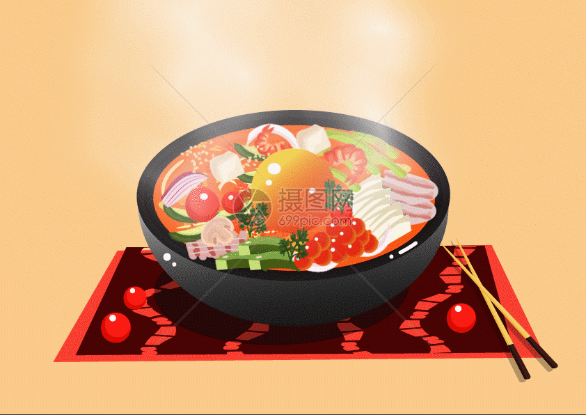
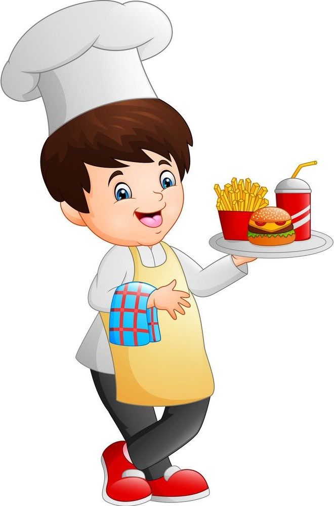

Here are some delicious foods from around the world along with their places of origin: If you want these foods you have to wait 40 minutes
Pricing
Here are some delicious fast food items along with their prices



About Me
Menu: A website should include a comprehensive menu with photos of the food, and it should be easy to find.
Prices: Customers should be able to see the prices of the items on the menu.
Options: A website should indicate if there are vegetarian, vegan, or gluten-free options.
Descriptions: A website can include detailed descriptions of each dish, including ingredients, cooking methods, and nutritional information.
Images: A website should include professional photography that makes the food look appealing.
Contact information: A website should include the restaurant's location and contact information.
Reservations and ordering: A website should include prominent buttons for making reservations and ordering online.
Organization: A website should be organized so that it's easy to navigate.
Staff bios: A website can include bios of important staff, such as chefs or business owners.
Customer photos: A website can include photos of customers enjoying their food.